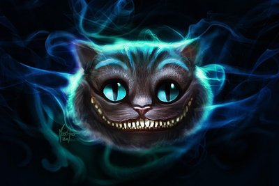

The Cheshire Cat is a fictional character from Lewis Carroll's Alice in Wonderland. The Cheshire Cat, a riddling character, appears as a large housecat to the protagonist Alice. He provides cryptic advice to her through surrealistic prose, guiding her and infuriating her at the same time. He has the ability to become invisible, with only his giant smile disappearing long after the rest has faded away.
Alice in Wonderland was published in 1865, and has been enorously influential to the literary fantasy genre through the ages. Pop culture has embraced the many characters found in Alice in Wonderland, with Alice and the Cheshire Cat being considered core characters for the story.